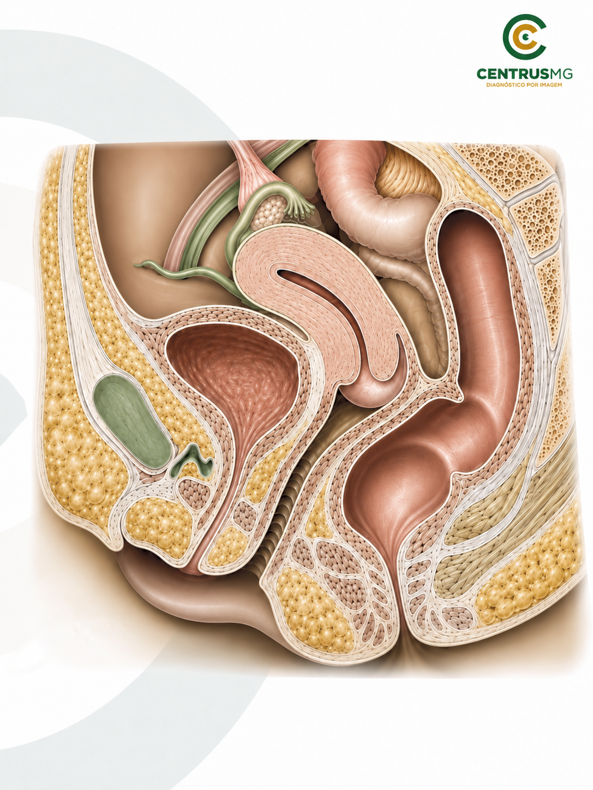
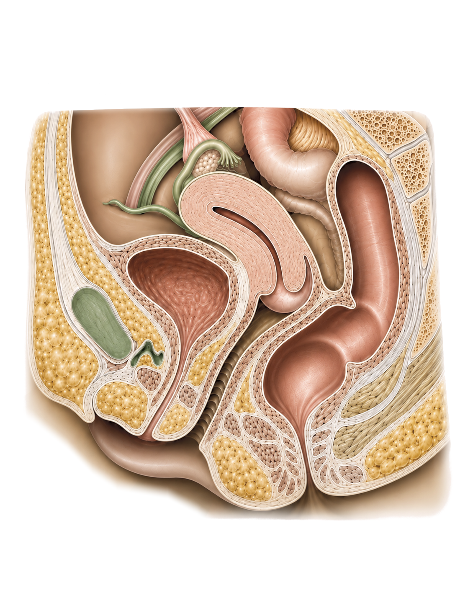
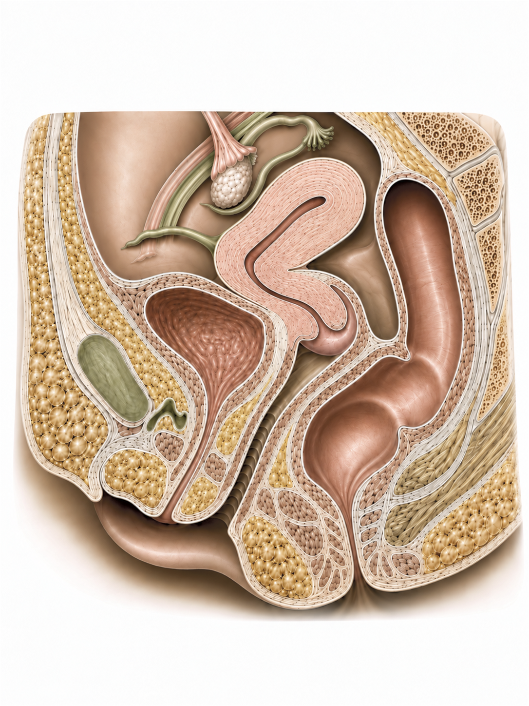
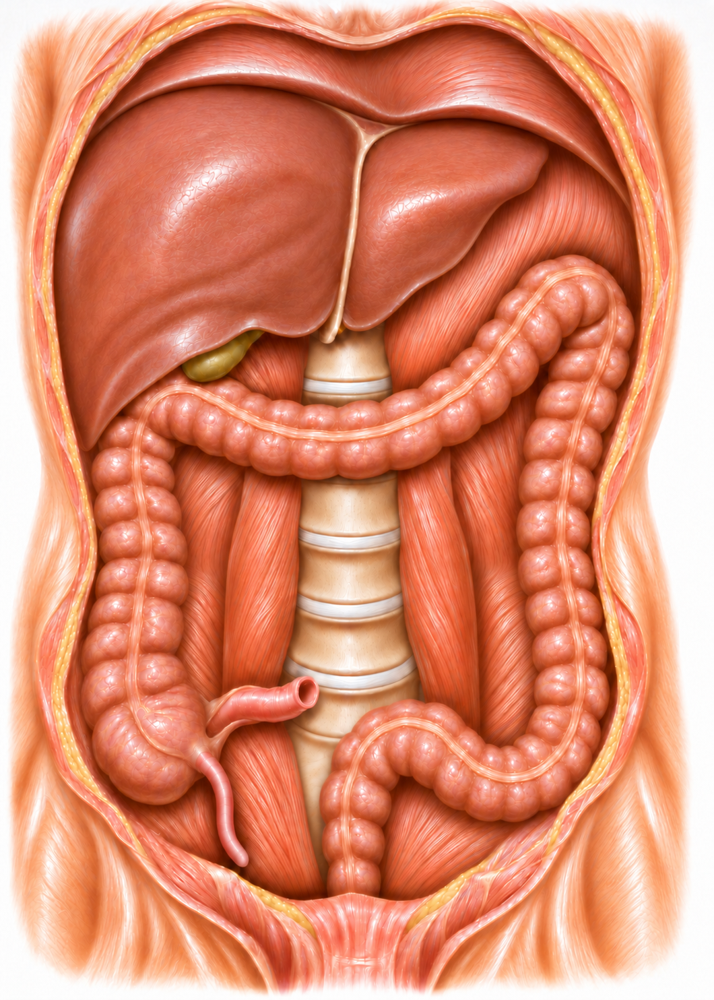
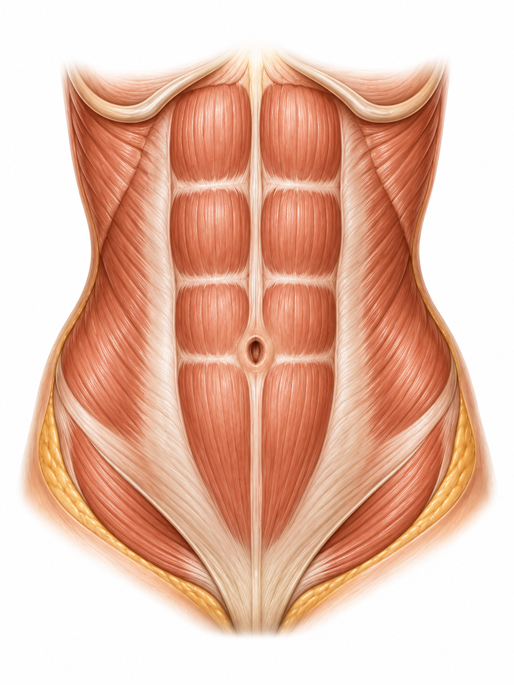

Pergunta
Respondida
A lesão de 0,6 × 0,2 cm está no ligamento uterossacro esquerdo?
O exemplo repetiu o lado direito. O mapa não pode avançar com uma lateralidade duvidosa.
A lesão de 0,6 × 0,2 cm está no ligamento uterossacro esquerdo?
Revise as duas vistas e os achados estruturados antes de confirmar o resultado.
A montagem futura começará por estas imagens sem lesões. A assinatura acompanha o médico selecionado.
 Daniel
Daniel

DanielAs lesões abaixo vieram do ditado confirmado. Confira os dados e a posição antes de confirmar o mapa.
Esta conclusão é demonstrativa. Nenhum arquivo real foi criado ou salvo hoje.
Sua biblioteca de mapas escolhidos. Abra, organize a ordem ou exclua os que não quiser manter.
Carregando seus mapas...
Montagens salvas ou atualizadas hoje e PDFs preparados na sua conta, incluindo a fusão. O dia segue o horário do seu aparelho.
Carregando o painel do dia...
Cada arquivo PDF, PNG ou JPEG preparado para liberação conta uma vez, inclusive novas cópias e fusão 3D/Hycosy. Não representa pacientes ou exames únicos nem confirma salvamento no aparelho. Horário de Brasília; a semana começa na segunda-feira.
Arquivos registrados por usuário, incluindo o histórico disponível e novas cópias.
| Nº | Usuário | Arquivos |
|---|
Nenhuma exportação registrada.
Cada geração concluída conta uma vez, inclusive novas cópias. Não confirma impressão ou salvamento no aparelho.
Escolha uma lesão-padrão, adicione ao mapa e ajuste com o dedo.
Em ambas, selecione a vista que deseja editar. Monte e baixe cada vista separadamente.
Adicionando lesões à vista coronal.
Toque em um modelo para acrescentá-lo ao mapa.
0%: mapa inteiro visível. 100%: anatomia invisível sobre o fundo branco. Lesões e textos permanecem visíveis.
Aplica-se a todas as vistas e aos arquivos PNG, JPEG e PDF. As lesões permanecem coloridas.







A linha curva indica a projeção da cicatriz da pele sobre o mapa muscular; não é um corte nos músculos. Posição ilustrativa, sem escala em centímetros.
Somente Salvar na biblioteca guarda esta montagem em Meus mapas. Baixar PDF, PNG ou JPEG não salva o mapa na biblioteca.
Confira a posição das lesões, os nomes e as medidas antes de baixar. O PDF usa folhas A4, com uma página por vista selecionada.
Marque para baixar PNG, JPEG ou PDF sem logo da clínica, marca-d’água e assinatura do médico. A montagem na tela permanece igual.
Abra a fusão para carregar as ferramentas.